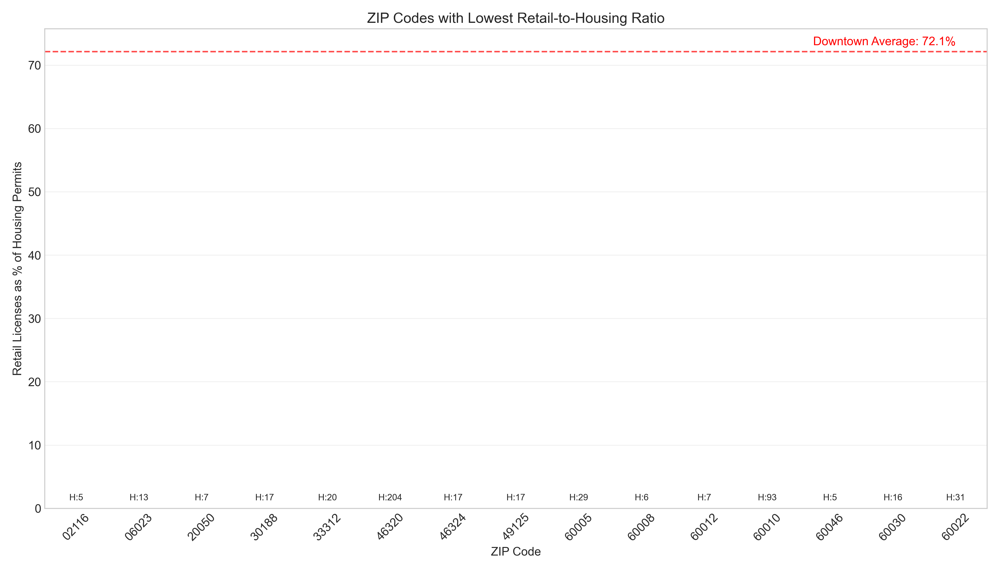

Key Metrics
Housing Permits
Total housing permits analyzed
Retail Licenses
Total retail business licenses
ZIP Codes
Chicago ZIP codes analyzed
Downtown Retail Ratio
Higher than non-downtown areas
Housing-Retail Imbalance

ZIP Codes with Highest Housing-to-Retail Imbalance
This visualization shows ZIP codes with the highest imbalance between housing permits and retail licenses, with higher values indicating greater retail opportunities.

Housing Permits vs. Retail Licenses by ZIP Code
This scatter plot compares the number of housing permits to retail licenses for each ZIP code, with the reference line showing a 1:1 ratio.
Emerging Housing Areas

ZIP Codes with New Housing Development and Limited Retail
This chart highlights areas with significant recent growth in housing development but limited retail business presence.

New Housing Development vs. Retail Licenses
This visualization shows the relationship between growth in housing permits and existing retail licenses, identifying opportunities for retail expansion.
Downtown vs. Non-Downtown Comparison

Housing Permits and Retail Licenses: Downtown vs. Non-Downtown
This comparison shows the significant difference in retail-to-housing ratios between downtown and non-downtown areas of Chicago.

ZIP Codes with Lowest Retail-to-Housing Ratio
This visualization identifies the areas with the lowest retail provision relative to housing development, compared to the downtown benchmark.
Population Shifts Analysis

Population Movement by Neighborhood Type
This visualization shows migration patterns across different Chicago neighborhoods, with higher-income areas experiencing less net out-migration than lower-income areas.
Key Population Shift Insights
- Higher vs. Lower Income Areas: Higher-income (non-LMI) census tracts experience only -0.2% net migration vs. -1.4% in low-to-moderate income (LMI) tracts
- In-Migration vs. Out-Migration: For every 100 people moving out of non-LMI areas, 98 move in, compared to only 81 in LMI areas
- Educational Attainment: Areas with growing college-educated populations show stronger population stability
- Economic Factors: Neighborhoods with improved median household incomes and credit scores demonstrate greater population growth potential
Neighborhood Opportunities
Downtown/Loop Areas
Retail Deficit: Low
Housing Activity: High
Population Trend: Stable/Growth
Key ZIP Codes: 60603, 60606
Characteristics: Commercial transformation to residential, strong retail presence, attractive to higher-income residents
Opportunities: Specialty retail, high-end services, experiential retail concepts
North Side Areas
Retail Deficit: Medium
Housing Activity: High
Population Trend: Growth
Key ZIP Codes: 60610, 60626
Characteristics: Established high-income areas, strong population retention, higher educational attainment
Opportunities: Neighborhood-focused retail, food and beverage establishments, health and wellness services
West Side Areas
Retail Deficit: High
Housing Activity: Very High
Population Trend: Mixed
Key ZIP Codes: 60607, 60622, 60647
Characteristics: Gentrification in progress, significant housing development, retail lagging behind housing
Opportunities: Immediate retail development required, particularly in Logan Square (60647) and Wicker Park (60622)
South Side Areas
Retail Deficit: Medium-High
Housing Activity: Medium
Population Trend: Decline
Key ZIP Codes: 60617, 60619
Characteristics: Emerging growth areas, lower in-migration rates, lower educational attainment
Opportunities: Essential retail services, community-focused businesses, strategic development to address both retail deficits and population decline
Key Findings
- Housing-Retail Imbalance: ZIP codes 60602, 60622, 60647, 60607, and 60618 show significant housing development without corresponding retail business growth.
- Emerging Housing Areas: ZIP codes 60654, 60642, 60439, and 60525 show recent growth in housing development with limited retail presence.
- Downtown vs. Non-Downtown: Downtown areas maintain approximately 3.2 times higher retail-to-housing ratio than non-downtown neighborhoods.
- Population Movements: Higher-income neighborhoods experience much less net out-migration (-0.2%) than lower-income areas (-1.4%).
- Migration Drivers: Lower in-migration rates, rather than higher out-migration rates, drive population loss in less affluent neighborhoods.
- Development Potential: Areas with both positive housing development and stable population trends present the strongest retail opportunities.
Recommendations
- Target immediate retail development in Logan Square (60647) and Wicker Park (60622).
- Focus on neighborhood service retail in areas with highest housing-to-retail imbalance.
- Develop food and beverage establishments in emerging housing areas like River North (60654) and Noble Square/West Town (60642).
- Increase retail zoning flexibility in high-housing, low-retail areas.
- Create tax incentives for retail development in emerging housing areas.
- Develop retail corridors in suburban growth areas like Lemont (60439) and Western Springs/La Grange (60525).
- Implement integrated economic and housing policies that address both retail deficits and population stabilization in LMI neighborhoods.
- Prioritize retail development in areas demonstrating positive population momentum.